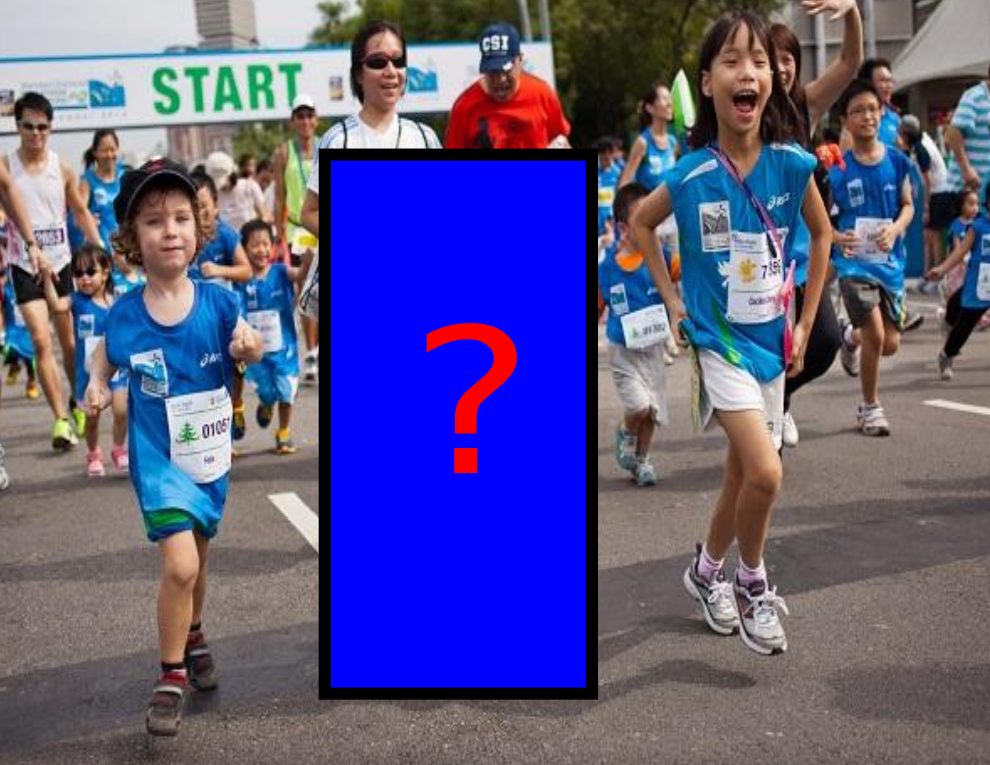

|
 |
Puneet K. Dokania, A. Behl, C. V. Jawahar and M. Pawan Kumar We consider the problem of using high-order information (for example, persons in the same image tend to perform the same action) to improve the accuracy of ranking (specifically, average precision). We develop two learning frameworks. The high-order binary SVM (HOB-SVM) optimizes a convex upper bound of the surrogate 0-1 loss function. The high-order average precision SVM (HOAP-SVM) optimizes a difference-of-convex upper bound on the average precision loss function. |